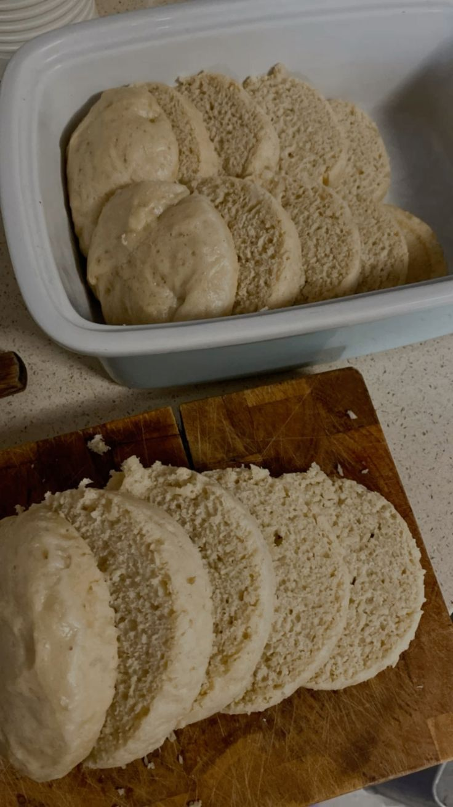
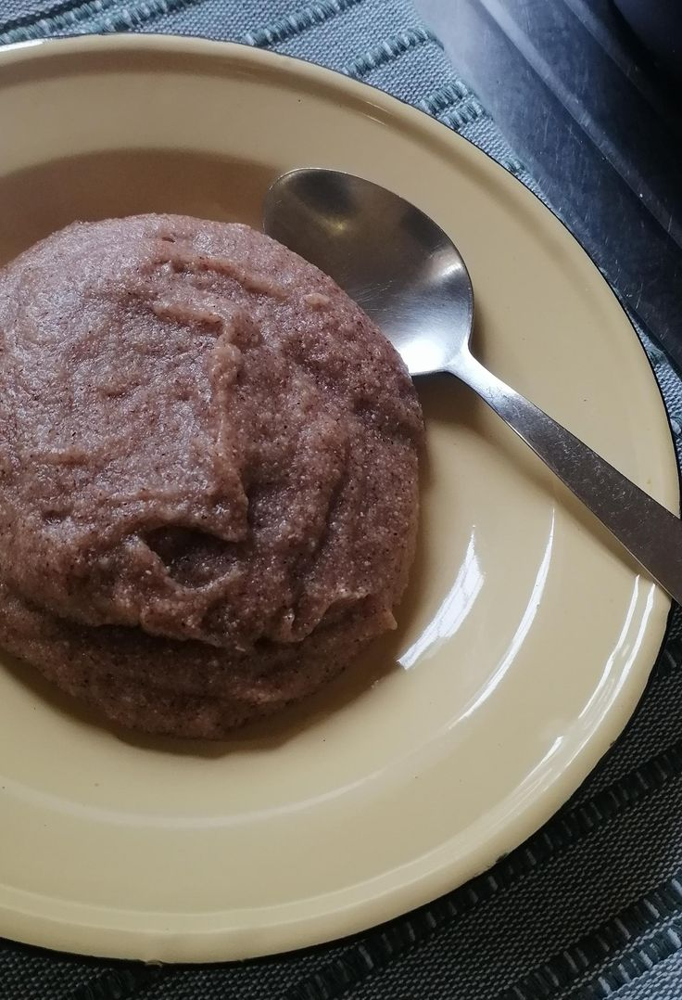
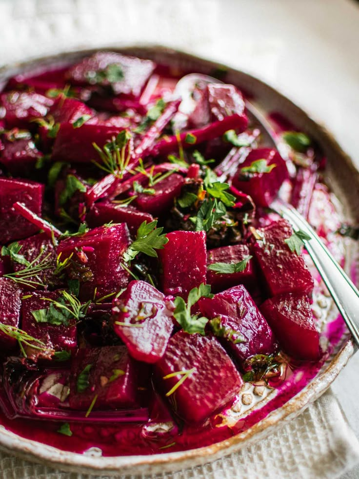

starters
Boerewors "Proetjies": Small, grilled pieces of traditional spiced sausage served on skewers with a side of spicy chakalaka or tomato relish.

Vetkoek & Mince: Small, golden-fried yeast dough balls filled with savory curried ground beef.

Peri-Peri Livers: These look best in shallow white bowls to highlight the rich, vibrant red sauce, often accompanied by a single, toasted "Portuguese-style" roll slice.

main course
starch
pap,mixed with parmeasan and truffle oil

samp and beans mixed with butter and fresh herbs.

dumpling soft steamed bread dough mixed with carrots and rosemary

rice mixed with rice spice

Ting: A fermented sorghum porridge with a unique sour taste, popular in Tswana culture.

slow cooked meat
beef stew,mixed with ground paprika,rosemary and sweet chilli

mogodu mixed with rosemary,ground paprika,bbq spice and chukney

hardbody,mixed with ground paprika,bbq,rosemary and our special saurce

butter chicken curry,mixed with cream,butter,bbq,ground paprika and rosemary

salads or sides
chakalaka

beetroot

potato salads

pumpkin

creamey spinach salads

deserts
Malva Pudding: A spongy, caramelized apricot pudding served warm with a rich cream sauce or custard

Milk Tart (Melktert): A creamy milk-based custard tart in a thin pastry crust, dusted with cinnamon.
.jpg)
peppermint tart:It’s a no-bake wonder made from layers of whipped cream, caramel treat (caramelized condensed milk), and crushed Peppermint Crisp chocolate bars, usually anchored by tennis biscuits.